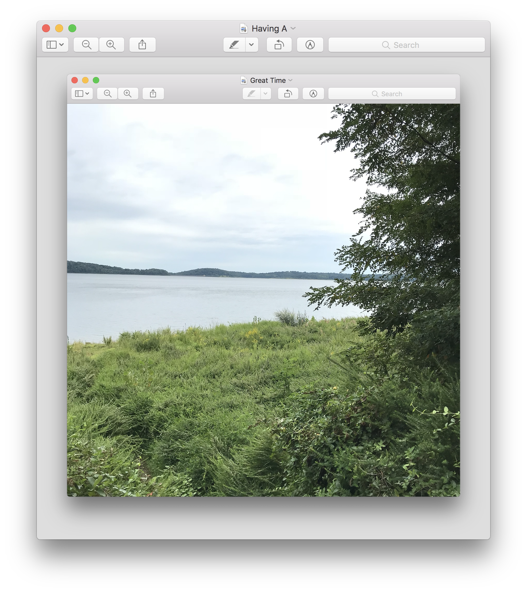

I have been a music writer and radio DJ since 2011, and I want to improve my computer fluency to present my works in new ways.
I studied Journalism, Gender Studies, and Philosphy at Rutgers in New Brunswick, NJ. While there I DJ'ed and managed their community radio station
90.3 The Core and wrote for
The Daily Targum as well as our station's blog. I went on to contribute writing to a (now-defunct) blog called Dingus On Music, and worked for several years as a clerk at
Vintage Vinyl.
I moved to Philadelphia near the end of 2016, and have since been a contributing writer to The Deli Magazine. I am now a DJ at WPRB 103.3 FM in Princeton, while working full time as a woodworker at Peg & Awl.
I also make sammmmmmple-based electronic music with hardware instruments. My current project is
The Candid Valley
